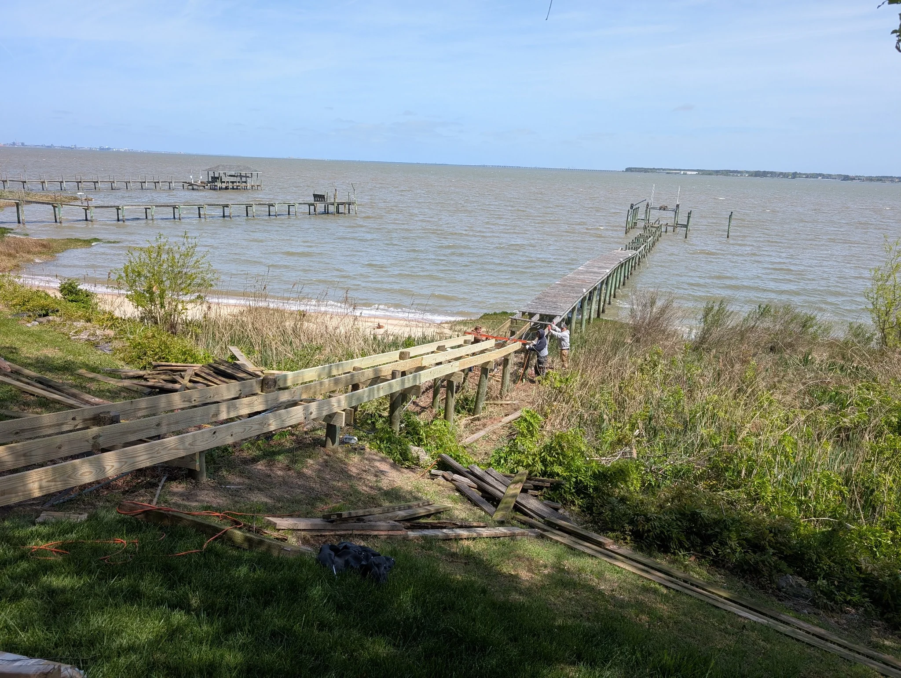
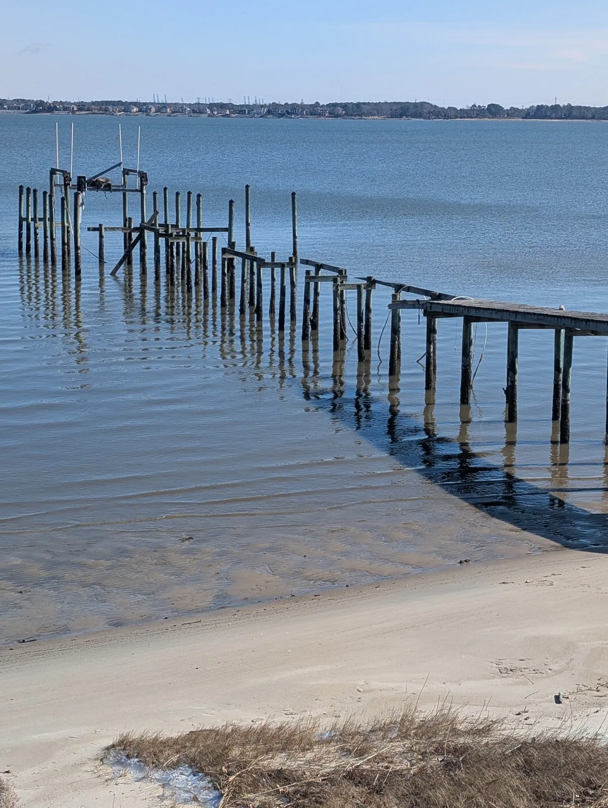

Boards and accessible framing • Existing residential piers
Selective pier repairs in Hampton Roads
Fix the boards and framing that have failed — without rebuilding a pier that is still doing its job.
A rebuild is not always the honest answer.
Sometimes a run of boards is done. A landing has gone soft. A section of accessible framing needs attention, and the rest of the walkway is still sound. That is selective repair: take up what has failed, leave what is still working, and say so in plain language.
Stewart Bradley Pier Services repairs deteriorated deck boards and reachable framing on existing residential piers. Class A contractor, license #2705160892. Suffolk-based. We will also tell you when a patch is the wrong answer — and when re-decking is the better path.
When a repair is enough
Isolated cupping or rot. A few raised fasteners. Storm or boat damage in one area. Accessible framing that can be renewed without taking the whole deck up. Those jobs stay in the repair column.
When failure is widespread, the walkway holds water from end to end, or the pier has moved, a re-deck usually buys you more than another round of patches. We do not install new pilings or take on engineered structural work.
What the work can include
- Remove failed boards in the affected area
- Inspect accessible framing and renew it where it should be replaced
- Match spacing and fasteners to the rest of the pier
- Finish the repair so it sits cleanly with the existing walkway
Pressure washing, staining, or a rope rail can share the visit when they belong. You get a defined estimate first — not an open-ended “we will see what we find” on a residential pier.
Hampton Roads waterfront
Suffolk, Virginia Beach, Chesapeake, Smithfield, Isle of Wight, Portsmouth, Norfolk, Hampton, and Newport News. Creeks and branches including Lynnhaven, Broad Bay, Bennett’s Creek, Nansemond, and Western Branch.
How it goes
Send a photo of what you are seeing. We walk the pier. You receive a written scope. We do the agreed work.
Call (804) 501-6783 or use the estimate form below.


Ready to restore your pier?
Let’s talk about your pier.
Choose a convenient time for a free consultation. We can discuss what you are seeing, answer initial questions and determine the best next step.
Schedule a Free Pier Consultation- Free consultation
- Honest recommendations
- Virginia Class A contractor
- Serving Hampton Roads
Not Ready To Schedule?
Request a Free Estimate
Send a few details below and we will follow up, typically the same business day.